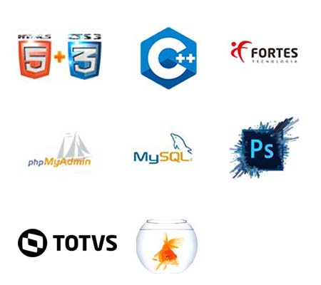

Computação > Contabilidade
MEU WEB SITE
Por Daniel Damasio
Atualizado em 13/06/2020
Quem eu sou
Sou um eterno amante por tecnologia, desenvolvi aqui um website para contar minha historia. Comecei com o curso de ciência da computão na Faculdade Facape no segundo semestre de 2019, e, cursando em minha grade paguei a disciplina de contabilidade basica, foi ai que me apaixonei por contabilidade.
Computação
Contabilidade
FORMAÇÃO ACADÊMICA
Cursando Ciências Contábeis, no 7º período na Faculdade Facape em Petrolina-PE, turno noite;
Cursei Ciência da Computação até o 6º período na Faculdade Facape em Petrolina-PE, (sendo um período, na Faculdade FPB Faculdade Internacional da Paraíba em João Pessoa-PB).
Minhas Habilidades
| Conhecimento em Informática | Pacote Office |
| Facilidade no aprendizado para utilização de sistemas | Devido a experiência em desenvolvê-los no curso de computação |
| Cálculos matemáticos | |
| Aptidão | Comunicação |
| Processos | |
| Banco de Dados | SQL |
Minhas Tecnologias
Aqui estão algumas das Tecnologias que estudei, e tenho dominio em minha carreira de eterno aluno.
O que irei fazer por sua empresa
Eu não prometo ser 100% acertivo na execução de todas as atividades em todas as vezes, mas, garato dar o meu melhor todos os dias para que eu chegue la.
[AQUI ENTRA UM VÍDEO]